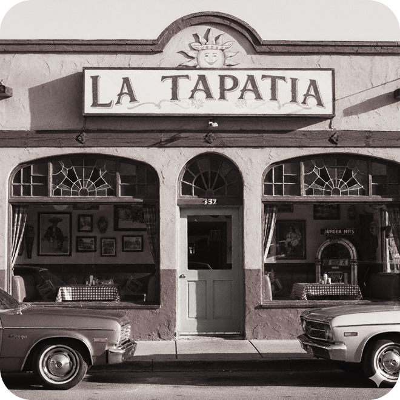

La Chelita is a reimagined Tex-Mex diner that blends the warmth of a traditional Jalisco-style kitchen with the flair of modern Texas dining. Once a neighborhood tortillería, it now serves as a bridge between old and new, offering handmade tortillas, family recipes, and inventive twists that reflect the area’s changing tastes. Balancing heritage and innovation, La Chelita aims to stay true to its roots while welcoming a new generation of diners.
Jessica Ramírez is the heart behind La Chelita, transforming her grandmother’s old tortillería into a modern Tex-Mex diner that reflects her dual Mexican and American identity. Guided by her abuela’s legacy, she’s determined to honor her family’s traditions while adapting to the changing neighborhood around her. For Jessica, every decision, from the menu to the décor, is a balancing act between preserving her roots and creating something new.
“I wanted to have La Chelita feel like the birthday parties my abuelita used to throw: warn, colorful, and full of life.”